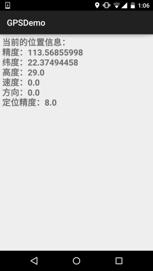
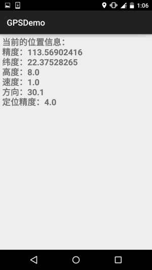
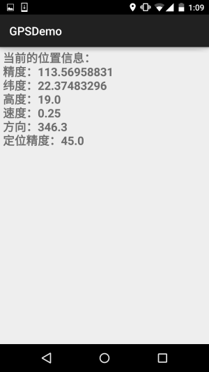
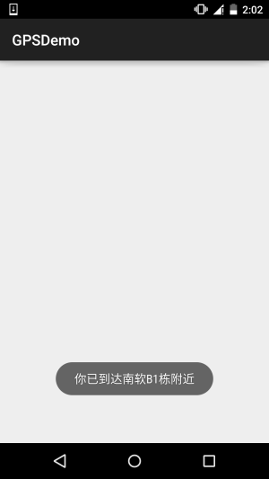
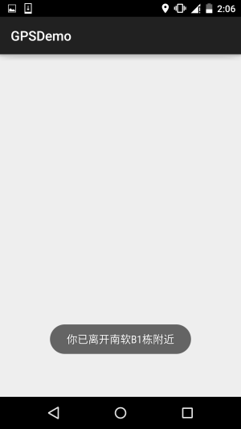

この節の導入：
GPSという言葉について、皆さんご存知だと思います。GPSはグローバル測位技術ですね。Androidの測位方式は一般的に次の4つがあります：GPS測位、WiFi測位、基地局測位、AGPS測位（基地局+GPS）；
本チュートリアルシリーズではGPS測位の基本的な使い方のみを解説します！GPSは衛星との通信によりデバイスの現在の緯度経度を取得します。精度は高いですが、いくつかの欠点もあります。最大の欠点は：屋内ではほぼ使用できない...GPSの正確な測位を保証するには4機以上の衛星信号を受信する必要があります！しかし、屋外でネットワークがない場合でもGPSは使用できます！
この節ではAndroidにおけるGPSの基本的な使い方について見ていきましょう～
1.位置情報に関するAPI
1）LocationManager
公式APIドキュメント：LocationManager
これはシステムサービスなので、直接newすることはできません。次のようにします：
LocationManager lm = (LocationManager)getSystemService(Context.LOCATION_SERVICE);
また、GPS測位を使用する際は権限の追加を忘れないでください：
<uses-permission android:name="android.permission.ACCESS_FINE_LOCATION"/>
では、LocationManagerオブジェクトを取得した後、以下に挙げるよく使われるメソッドを呼び出すことができます：
- addGpsStatusListener（GpsStatus.Listener listener）：GPS状態リスナーを追加する
- addProximityAlert（double latitude, double longitude, float radius, long expiration, PendingIntent intent）：接近警告を追加する
- getAllProviders（）：すべてのLocationProviderのリストを取得する
- getBestProvider（Criteria criteria, boolean enabledOnly）：指定した条件に基づいて最適なLocationProviderを返す
- getGpsStatus（GpsStatus status）：GPS状態を取得する
- getLastKnownLocation（String provider）：LocationProviderに基づいて直近に知られているLocationを取得する
- getProvider（String name）：名前からLocationProviderを取得する
- getProviders（boolean enabledOnly）：利用可能なすべてのLocationProviderを取得する
- getProviders（Criteria criteria, boolean enabledOnly）：指定した条件を満たすすべてのLocationProviderを取得する
- isProviderEnabled（String provider）：指定した名前のLocationProviderが利用可能かどうかを判断する
- removeGpsStatusListener（GpsStatus.Listener listener）：GPS状態リスナーを削除する
- removeProximityAlert（PendingIntent intent）：接近警告を削除する
- requestLocationUpdates（long minTime, float minDistance, Criteria criteria, PendingIntent intent）：指定したLocationProviderを使用して定期的に位置情報を取得し、Intentを通じて対応するコンポーネントを起動する
- requestLocationUpdates（String provider, long minTime, float minDistance, LocationListener listener）：指定したLocationProviderを使用して定期的に位置情報を取得し、listenerに対応するトリガーを発動する
2) LocationProvider（位置情報プロバイダー）
公式APIドキュメント：LocationProvider
これはGPS測位コンポーネントの抽象表現です。以下のメソッドを呼び出すことで、この測位コンポーネントの関連情報を取得できます！
よく使われるメソッドは次のとおりです：
- getAccuracy（）：LocationProviderの精度を返す
- getName（）：LocationProviderの名前を返す
- getPowerRequirement（）：LocationProviderの電源要件を取得する
- hasMonetaryCost（）：このLocationProviderが有料か無料かを返す
- meetsCriteria（Criteria criteria）：LocationProviderがCriteria条件を満たすかどうかを判断する
- requiresCell（）：LocationProviderがネットワーク基地局へのアクセスを必要とするかどうかを判断する
- requiresNetwork（）：LocationProviderがネットワークデータへのアクセスを必要とするかどうかを判断する
- requiresSatellite（）：LocationProviderが衛星ベースの測位システムへのアクセスを必要とするかどうかを判断する
- supportsAltitude（）：LocationProviderが高度情報をサポートするかどうかを判断する
- supportsBearing（）：LocationProviderが方向情報をサポートするかどうかを判断する
- supportsSpeed（）：LocationProviderが速度情報をサポートするかどうかを判断する
3) Location（位置情報）
公式APIドキュメント：Location
位置情報の抽象クラスです。以下のメソッドを呼び出して関連する位置情報を取得できます！
よく使われるメソッドは次のとおりです：
- float getAccuracy（）：位置情報の精度を取得する
- double getAltitude（）：位置情報の高度を取得する
- float getBearing（）：位置情報の方向を取得する
- double getLatitude（）：位置情報の緯度を取得する
- double getLongitude（）：位置情報の経度を取得する
- String getProvider（）：その位置情報を提供したLocationProviderを取得する
- float getSpeed（）：位置情報の速度を取得する
- boolean hasAccuracy（）：その位置情報に精度情報が含まれているかどうかを判断する
4) Criteria（フィルタ条件）
公式APIドキュメント：Criteria
LocationProviderを取得する際に、フィルタ条件を設定できます。このクラスを通じて関連する条件を設定します～
よく使われるメソッドは次のとおりです：
- setAccuracy（int accuracy）：精度の要件を設定する
- setAltitudeRequired（boolean altitudeRequired）：LocationProviderが高度情報を提供できることが必要かどうかを設定する
- setBearingRequired（boolean bearingRequired）：LocationProviderが方向情報を提供できることが必要かどうかを設定する
- setCostAllowed（boolean costAllowed）：LocationProviderが有料であることを許可するかどうかを設定する
- setPowerRequirement（int level）：LocationProviderの消費電力量の要件を設定する
- setSpeedRequired（boolean speedRequired）：LocationProviderが速度情報を提供できることが必要かどうかを設定する
2.LocationProviderを取得する例
実行結果のスクリーンショット：

図からわかるように、現在利用可能なLocationProviderは3つあります。それぞれ：
- passive：パッシブ提供。他のプログラムによって提供される
- gps：GPSを通じて位置情報を取得する
- network：ネットワークを通じて位置情報を取得する
実装コード：
レイアウトファイル：activity_main.xml：
<LinearLayout xmlns:android="http://schemas.android.com/apk/res/android"
android:layout_width="match_parent"
android:layout_height="match_parent"
android:orientation="vertical">
<Button
android:id="@+id/btn_one"
android:layout_width="wrap_content"
android:layout_height="wrap_content"
android:text="获得系统所有的LocationProvider" />
<Button
android:id="@+id/btn_two"
android:layout_width="wrap_content"
android:layout_height="wrap_content"
android:text="根据条件获取LocationProvider" />
<Button
android:id="@+id/btn_three"
android:layout_width="wrap_content"
android:layout_height="wrap_content"
android:text="获取指定的LocationProvider" />
<TextView
android:id="@+id/tv_result"
android:layout_width="match_parent"
android:layout_height="match_parent"
android:layout_margin="10dp"
android:background="#4D84BB"
android:padding="5dp"
android:textColor="#FFFFFF"
android:textSize="20sp"
android:textStyle="bold" />
</LinearLayout>
MainActivity.java：
public class MainActivity extends AppCompatActivity implements View.OnClickListener {
private Button btn_one;
private Button btn_two;
private Button btn_three;
private TextView tv_result;
private LocationManager lm;
private List<String> pNames = new ArrayList<String>(); // 存放LocationProvider名称的集合
@Override
protected void onCreate(Bundle savedInstanceState) {
super.onCreate(savedInstanceState);
setContentView(R.layout.activity_main);
lm = (LocationManager) getSystemService(Context.LOCATION_SERVICE);
bindViews();
}
private void bindViews() {
btn_one = (Button) findViewById(R.id.btn_one);
btn_two = (Button) findViewById(R.id.btn_two);
btn_three = (Button) findViewById(R.id.btn_three);
tv_result = (TextView) findViewById(R.id.tv_result);
btn_one.setOnClickListener(this);
btn_two.setOnClickListener(this);
btn_three.setOnClickListener(this);
}
@Override
public void onClick(View v) {
switch (v.getId()) {
case R.id.btn_one:
pNames.clear();
pNames = lm.getAllProviders();
tv_result.setText(getProvider());
break;
case R.id.btn_two:
pNames.clear();
Criteria criteria = new Criteria();
criteria.setCostAllowed(false); //免费
criteria.setAltitudeRequired(true); //能够提供高度信息
criteria.setBearingRequired(true); //能够提供方向信息
pNames = lm.getProviders(criteria, true);
tv_result.setText(getProvider());
break;
case R.id.btn_three:
pNames.clear();
pNames.add(lm.getProvider(LocationManager.GPS_PROVIDER).getName()); //指定名称
tv_result.setText(getProvider());
break;
}
}
//遍历数组返回字符串的方法
private String getProvider(){
StringBuilder sb = new StringBuilder();
for (String s : pNames) {
sb.append(s + "\n");
}
return sb.toString();
}
}
3.GPSがオンになっているかどうかの判断とGPSをオンにする2つの方法
GPS測位を使用する前に最初に行うべきことは、GPSがすでにオンになっているか利用可能かを判断することです。オンになっていない場合、測位を完了するにはGPSをオンにする必要があります！ここではAGPSの状況は考慮しません～
1) GPSが利用可能かどうかを判断する
private boolean isGpsAble(LocationManager lm){
return lm.isProviderEnabled(android.location.LocationManager.GPS_PROVIDER)?true:false;
}
2) GPSがオンになっていないことを検出したら、GPSをオンにする
方法1：GPSを強制的にオンにする。Android 5.0以降では無意味....
//强制帮用户打开GPS 5.0以前可用
private void openGPS(Context context){
Intent gpsIntent = new Intent();
gpsIntent.setClassName("com.android.settings", "com.android.settings.widget.SettingsAppWidgetProvider");
gpsIntent.addCategory("android.intent.category.ALTERNATIVE");
gpsIntent.setData(Uri.parse("custom:3"));
try {
PendingIntent.getBroadcast(LocationActivity.this, 0, gpsIntent, 0).send();
} catch (PendingIntent.CanceledException e) {
e.printStackTrace();
}
}
方法2：GPS位置情報設定ページを開き、ユーザーに自分でオンにさせる
//打开位置信息设置页面让用户自己设置
private void openGPS2(){
Intent intent = new Intent(Settings.ACTION_LOCATION_SOURCE_SETTINGS);
startActivityForResult(intent,0);
}
4.位置情報を動的に取得する
これは非常に簡単です。requestLocationUpdatesメソッドを呼び出してLocationListenerを設定し、定期的に位置を検出するだけです！
サンプルコードは次のとおりです：
レイアウト：activity_location.xml：
<?xml version="1.0" encoding="utf-8"?>
<LinearLayout xmlns:android="http://schemas.android.com/apk/res/android"
android:layout_width="match_parent"
android:layout_height="match_parent"
android:orientation="vertical">
<TextView
android:id="@+id/tv_show"
android:layout_width="match_parent"
android:layout_height="match_parent"
android:padding="5dp"
android:textSize="20sp"
android:textStyle="bold" />
</LinearLayout>
LocationActivity.java：
/**
* Created by Jay on 2015/11/20 0020.
*/
public class LocationActivity extends AppCompatActivity {
private LocationManager lm;
private TextView tv_show;
@Override
public void onCreate(Bundle savedInstanceState) {
super.onCreate(savedInstanceState);
setContentView(R.layout.activity_location);
tv_show = (TextView) findViewById(R.id.tv_show);
lm = (LocationManager) getSystemService(Context.LOCATION_SERVICE);
if (!isGpsAble(lm)) {
Toast.makeText(LocationActivity.this, "请打开GPS~", Toast.LENGTH_SHORT).show();
openGPS2();
}
//从GPS获取最近的定位信息
Location lc = lm.getLastKnownLocation(LocationManager.GPS_PROVIDER);
updateShow(lc);
//设置间隔两秒获得一次GPS定位信息
lm.requestLocationUpdates(LocationManager.GPS_PROVIDER, 2000, 8, new LocationListener() {
@Override
public void onLocationChanged(Location location) {
// 当GPS定位信息发生改变时，更新定位
updateShow(location);
}
@Override
public void onStatusChanged(String provider, int status, Bundle extras) {
}
@Override
public void onProviderEnabled(String provider) {
// 当GPS LocationProvider可用时，更新定位
updateShow(lm.getLastKnownLocation(provider));
}
@Override
public void onProviderDisabled(String provider) {
updateShow(null);
}
});
}
//定义一个更新显示的方法
private void updateShow(Location location) {
if (location != null) {
StringBuilder sb = new StringBuilder();
sb.append("当前的位置信息：\n");
sb.append("精度：" + location.getLongitude() + "\n");
sb.append("纬度：" + location.getLatitude() + "\n");
sb.append("高度：" + location.getAltitude() + "\n");
sb.append("速度：" + location.getSpeed() + "\n");
sb.append("方向：" + location.getBearing() + "\n");
sb.append("定位精度：" + location.getAccuracy() + "\n");
tv_show.setText(sb.toString());
} else tv_show.setText("");
}
private boolean isGpsAble(LocationManager lm) {
return lm.isProviderEnabled(android.location.LocationManager.GPS_PROVIDER) ? true : false;
}
//打开设置页面让用户自己设置
private void openGPS2() {
Intent intent = new Intent(Settings.ACTION_LOCATION_SOURCE_SETTINGS);
startActivityForResult(intent, 0);
}
}
では、非常に簡単です。GPSは屋外でないと使えないため、この機会にちょっと走ってコンビニへ行ってミルクティーを買い、ついでにスクリーンショットを撮りました～



requestLocationUpdates (String provider, long minTime, float minDistance, LocationListener listener)
minTime（単位：ミリ秒）を超える時間が経過した場合、または位置がminDistance（単位：メートル）を超えて移動した場合、listener内のメソッドが呼び出されGPS情報が更新されます。このminTimeは60000、つまり1分以上にすることをお勧めします。これにより、より効率的で省電力になります。できるだけリアルタイムにGPSを更新する必要がある場合は、minTimeとminDistanceを0に設定できます
そうそう、忘れずに、もう1つの権限が必要です：
<uses-permission android:name="android.permission.ACCESS_FINE_LOCATION" />
5.接近警告（ジオフェンス）
うーん、固定した1つの点を設定し、スマホがその点との距離が指定範囲より短くなった時に、対応する処理をトリガーできるというもの！少しジオフェンスに似ている...LocationManagerのaddProximityAlertメソッドを呼び出して接近警告を追加できる！完全なメソッドは以下の通り：
addProximityAlert(double latitude,double longitude,float radius,long expiration,PendingIntent intent)
属性の説明：
- latitude：固定点の経度を指定
- longitude：固定点の緯度を指定
- radius：半径の長さを指定
- expiration：何ミリ秒経過後にこの接近警告が期限切れで無効になるかを指定。-1は無期限を意味する
- intent：このパラメータは、固定点に接近した時にそのintentに対応するコンポーネントをトリガーすることを指定する
サンプルコードは以下の通り：
ProximityActivity.java：
/**
* Created by Jay on 2015/11/21 0021.
*/
public class ProximityActivity extends AppCompatActivity {
private LocationManager lm;
@Override
public void onCreate(Bundle savedInstanceState) {
super.onCreate(savedInstanceState);
setContentView(R.layout.activity_proximity);
lm = (LocationManager) getSystemService(Context.LOCATION_SERVICE);
//定义固定点的经纬度
double longitude = 113.56843;
double latitude = 22.374937;
float radius = 10; //定义半径，米
Intent intent = new Intent(this, ProximityReceiver.class);
PendingIntent pi = PendingIntent.getBroadcast(this, -1, intent, 0);
lm.addProximityAlert(latitude, longitude, radius, -1, pi);
}
}
ブロードキャストレシーバーも登録する必要がある：ProximityReceiver.java：
/**
* Created by Jay on 2015/11/21 0021.
*/
public class ProximityReceiver extends BroadcastReceiver{
@Override
public void onReceive(Context context, Intent intent) {
boolean isEnter = intent.getBooleanExtra( LocationManager.KEY_PROXIMITY_ENTERING, false);
if(isEnter) Toast.makeText(context, "你已到达南软B1栋附近", Toast.LENGTH_LONG).show();
else Toast.makeText(context, "你已离开南软B1栋附近", Toast.LENGTH_LONG).show();
}
}
登録を忘れないこと：
<receiver android:name=".ProximityReceiver"/>
実行結果のスクリーンショット：
PS：まあ、10mに設定したのに、B1からD1の方まで歩いてしまって、もう10mどころじゃないですよね...しかもちょうど雨が降ってきた


6.この節のサンプルコードのダウンロード
この節のまとめ：
はい、本節ではAndroidにおけるGPS測位の基本的な使い方を紹介しました。非常に簡単です。内容の一部は李刚先生の『Android疯狂讲义』を参考にしています。ただ、例に対していくつか修正を加え、実用性のテストも行いました！本節はここまでです。ありがとうございました〜